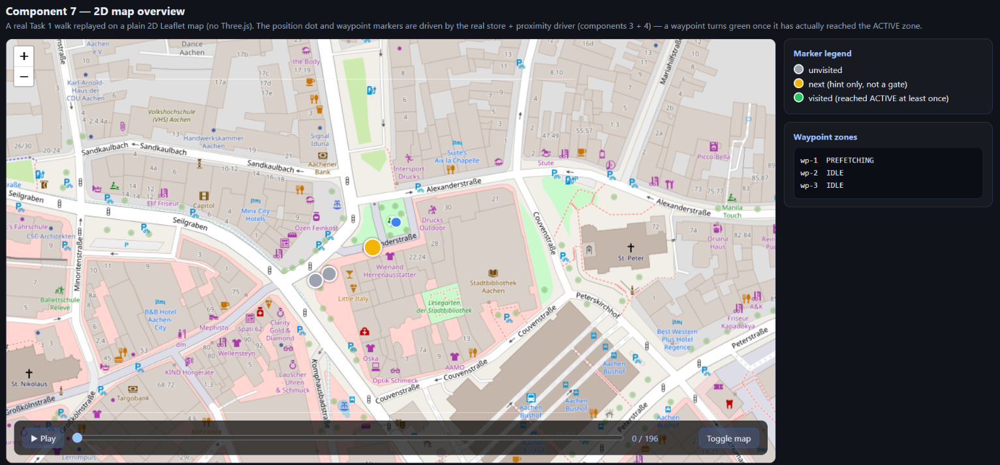
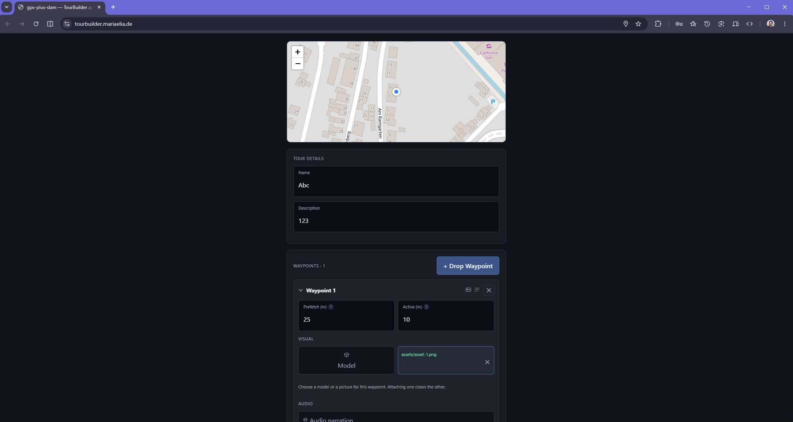
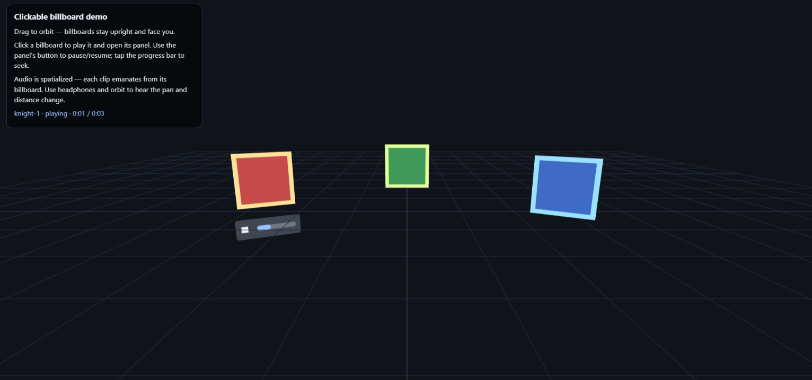

An AR tour-guide app — sprites, 3D models and audio stories — built as ten independent components.
Maria Elia · Nicolas Hellthaler · Location-Based WebXR Lab, Team 2
drops waypoints
Dropbox / OneDrive
walks the AR trail
No backend — the zip is the whole tour.
TourBuilder
WebXR · sensors · storage · replay
closed-source, GPS↔AR alignment
The framework never imports from us; the closed core never imports from the framework.
Built on cs-util-com/location-based-webxr (open-source fork)
Waypoints, radii, assets, breadcrumb trail — written once, read by both modes.
{
"waypoints": [
{ "lat": 50.778, "lon": 6.089,
"prefetchRadius": 25, "activeRadius": 10 }
],
"pois": [
{ "id": "knight-1", "assets": ["sprite-1", "audio-1"] }
],
"breadcrumb": [
{ "lat": 50.778, "lon": 6.089 }
]
}
Lat/lon appears only here — everything downstream is world-space meters.
Live GPS state
getAssetUrl(id) / release(id)
The store never holds asset bytes — that's what let us build it before the asset pipeline existed.
ChatGPT / Claude / Gemini
build for real
One of us writes the plan.md, the other implements it — Driver / Navigator, swapped every 30–60 min.
Roles swap — the implementer now plans, the planner now builds.
Every component saw both of us in both roles.
Only the AR scene (8) is built last — it composes everything before it.
Cylindrical yaw only, click plays spatial audio — the seed of the later AR knights.
HTML-in-3D, with a CanvasTexture fallback so it also works inside WebXR.
Two real store instances — click an action, watch the state update.
IDLE → PREFETCHING (≈25m) → ACTIVE (≈10m) — a real Task 1 walk, replayed.
ZIP "store" mode, no DEFLATE — the loading side reads one asset without unzipping the rest.
Google Drive, Dropbox, OneDrive — each needed its own CORS + redirect handling.
Nothing new here — the AR scene mostly just wires up components 1–7.
tourbuilder.mariaelia.de — author a tiny tour, export it, scan the QR into viewing mode.

Task 1 outdoor recording, Aachen — 22 Jun 2026
Had to borrow one — pushed us toward desktop-replayable demos from day one.
"Kind of hard to find out what the project is supposed to look like in the end" — diary, Component 1.

Before: fixed-size map, permanently visible panel.
Redesigned full-bleed, panel floats on top, torn down cleanly on export.
Feedback: review call, 7 Sept 2026
Every component got its own demo, proven on desktop against a real recorded walk — 9 of 10 needed no phone.
Same plan into ChatGPT, Claude and Gemini — compared on UX and code, borrowed the best ideas from each.
Starting point for discussion — happy to take questions on any of it.

Keep tourbuilder.mariaelia.de pre-loaded in a browser tab as the primary fallback.